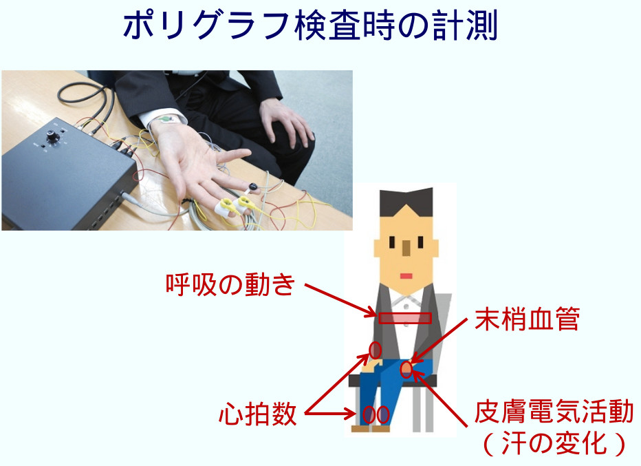

We are inviting you to participate in a lie detection experiment at the Aoyama Gakuin University (in Shibuya; see the
Aoyama campus map for the
location). Any person with a Japanese mother tongue and between the ages 20 and 40 can participate. You find the official research manual clicking
here.
However, below we give you the most important information.
-
The experiment takes approximately one hour, and you will be paid a fixed 1,000 JPY, and potential additional bonus up to another 1,000 JYP (hence altogether max. 2,000 JPY).
-
In this study, we use a polygraph-based and a response-time-based "lie detection" test to try to reveal whether or not a given participant committed a simulated "crime". Depending on random group assignment, you may be asked to go
to a certain office at the university building and "steal" certain information details. This is all part of the experiment and you will not be asked to
commit any actual crimes.
-
If you sign up to participate, we will send you an email with instructions about 12 hours before the experiment. Depending on group assignment, either you will be told to simply go directly to our laboratory, or you will be told
how to first commit the simulated crime (and then go to the laboratory). If you did actually commit the crime, it is very important that you must not tell about it to the experiment leader or anyone else! We ask you to deny having
done it and try to seem innocent until you are explicitly told that the lie detection simulation is over and you can reveal the truth.
We will do two lie detection tests, a polygraph-based one (see picture below) and a response time-based one (a simple computer keypress task).

If you are assessed as innocent of the crime (regardless of whether or not you are actually innocent), you may receive an additional
bonus of 500 JPY for each test. You lose all bonus if you are uncooperative or if we catch you trying to cheat the test in any way. We pledge that we are not strict in giving these rewards. However, we cannot share the detection
criteria before finishing the entire study (expected by end of March, 2022), and we offer no
guarantees for this added bonus.
At the very end, there will be a very short questionnaire, where you also truthfully have to indicate whether you participated in the crime.
-
If you participate, you must agree not to share the details of the experiment with anyone before December, 2022 (except with the explicit written permission of the experiment leaders). This is to ensure that future
participants are not biased in any manner.
-
When you come to the laboratory, before the lie detection tests, you will be asked to sign an informed consent document (which can be previewed clicking here) that confirms that
you read and understood the
information given here and in the research manual (linked
above).
-
This study is organized by Dr. Izumi Matsuda and Dr. Gaspar Lukacs. If you have any questions,
please contact Dr. Izumi Matsuda at
izumi [at] ephs.aoyama.ac.jp.
If you agree with all this and would like to participate, please send us an email to [......]@gmail.com telling us your preferred date and time and your full name. (You are welcome to specify more than one, e.g. two-three dates, in order of preference.)
Here you can see all currently available times:
[a Google calendar will be added here with available time slots]